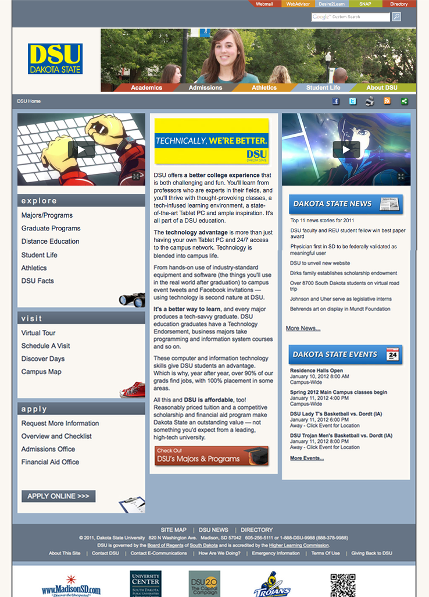
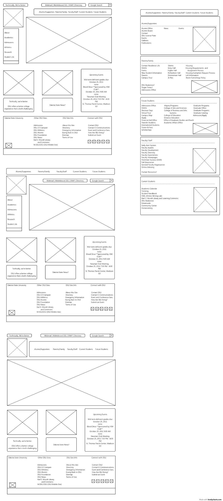

Trent Lutmer
My alma mater, is a four-year public institution specializing in computer technology, including one-year and two-year programs and short courses. Located in Madison, SD. As an FYI, the site has since been changed in 2013 and has been designed by a third party service. Regardless, if you still want to visit or apply to DSU, here's the website.
With four other designers we teamed up to redesign DSU’s academic website. Our goal was to match the school’s new brand and marketing scheme and easily help students apply to the university and easily find admission, academic, and student life information.
For a glimpse of what the site was previously, I've included a link. It's not fully operational, responsive, or working properly. At least it's alive somewhere in internet heaven.
